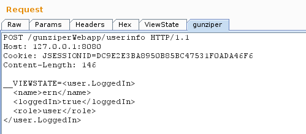

This module uses the xstream library while the idea has been stolen from the burp plugin JDSer-ng. The reason i integrated it in gunziper has been the need for additional processings which JDSer does not support (in one case, the java objects were additionally gziped and base64 encoded).
As this feature is normally only useful with Request/Response unpacking and the additional view (Match/Replace modifies the requests/responses, which most probably renders the client and/or server application unusable), the following description focuses on these 2 modules.
The principal steps to configure deserialization are the same as described in Request Unpacking but differs in the following parts:
1. The unpacking part should contain the "deserializeJavaObject" processor, like illustrated in the following picture (in this case the serialized java object is additionaly base64 encoded):

2. Burpsuite must beneath gunziper also started with 2 additional libraries and the application (e.g. the fat client) containing the class files :
- xstreamSo an example call for burspuite would be the following:
java -Xms1512m -classpath burpsuite_pro_v1.6.09.jar:/path/to/gunziper_0.9.7alpha.jar:kxml2-2.3.0.jar:xstream-1.4.7.jar:client.jar burp.StartBurpGiven the following request with an java serialized object, encoded with base64 and url encoding (this is no typical viewstate):

the following configuration:

leads to this result:
